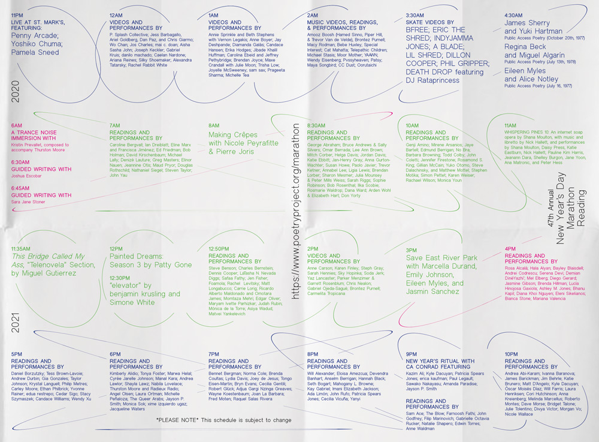

2020
The Poetry Project
Poster
Annual Marathon
The Poetry Project hosted a 24 hour online stream for their 47th Annual Marathon Reading Benefit. It featured a mix of archival footage and live contemporary recorded readings. I designed a schedule for the event on folded broadsheet newspaper with circles echoing the 15 degree movement of the sun of each of the 24 hours of the day.
- 30 x 22.75 inches
- 4 Color, Broadsheet Newsprint
- Edition of 3,000
Collaborators
- Laura Henriksen, Director of Education and Community Engagement

Self Initiated
Typeface
Fulana
Fulana is a medium contrast, translation display typeface with ornate serifs. The term fulana is Spanish slang for “whats-her-name.” This typeface was made during a 10 week class, Principles of Typeface Design at Type @ Cooper.
Self Initiated
Website
Grammys House
My grandmother, Stephania Hassan, moved to Egypt with her husband in late 2018, after living and working in NYC her whole life. She is an artist, and retired small business owner, social worker, and educator. She left me a box of images and printed ephemera that span over her many careers and personal life from the 1970s—early 2000s. I started building this online archive in the Fall 2020 session of Fruitful School. This project is in progress.
Visit the site.
Wendy's Subway
Book Cover
Retrieval
“Taking up the architecture and sonics of surveillance, Mallika Singh’s first chapbook, Retrieval explores the relationship between intimacy, data, and the structures of violence that entwine them.” I designed this cover for this chapbook during my fellowship at Wendy's Subway.
- 8 x 6 inches, 47 pages
- Risograph-printed
- Edition of 125
Collaborators
- Rachel Valinsky, Artistic Director
- Mallika Singh, Author
CUP + Flatbush Tenants Coalition
Poster
Making Policy Public
I collaborated with CUP and Flatbush Tenants Coalition on a folded poster on Making Policy Public; explaining the rights that tenants have to getting repairs in their apartments. The poster is in English, Spanish and Haitian Creole and is currently in production.
Collaborators
- Yasmin Safdie, CUP
- Clair Beltran, CUP
- Alejandra Nasser, Flatbush Tenants Coalition
Kyle Shybunko
Branding
Shybunko Spirits
I made a custom logotype and labels for homemade vermouth by my friend, Kyle Shybunko, who started to make bitters at home during the COVID-19 quarantine.
Self Initiated
Website
Lousy Mindless Salesgirl
I made ad-libs of an excerpted text on the “Lousy Mindless Salesgirl” from Blood and Guts in High School by Kathy Acker, published in 1984. The text questions the purpose of labor and a persons worth in relation to their position as a worker in America. Made at the inaugural winter 2020 session of Fruitful School.
Visit the site.
2019
John-Elio Reitman
Custom Type
Guabancex
My friend, John Elio, asked me for a typographic response to the 2017 Atlantic Hurricane season for a project in his MFA thesis show at Bard. While researching, I came upon the Taíno deity of storms, Guabancex, the mistress of all destructive natural phenomena, including earthquakes, volcanoes, climate shifts and hurricanes. As the entity that helps us remember just how vulnerable we are to the elements, I drew this type in her likeness.
Self-Initiated
Branding
Kokito
Coquito, which translates to "little coconut", is a traditional winter holiday drink made in Puerto Rico and its diaspora. The recipe varies but is usually a mix of coconut + sweetened, condensed milks. I made a dairy-free version, and branded it with a custom KOKITO logotype based on the Good’ O Kola Champagne logo. Kola Champagne is another drink import from Puerto Rico and remains a staple in NYC bodegas. Sold Out.
The Shed
In-house design
Various Projects
The Shed is a cultural center in Hudson Yards, New York City. Opened on April 5, 2019, The Shed commissions, produces, and presents a wide range of activities in performing arts, visual arts, and pop culture. Other Means made the visual identity for The Shed, and as I was hired to be apart of the inaugural in-house team I worked in collaboration with them to create assets for the institution—from Staff IDs and uniforms to brochures and special events materials—from scratch.
Collaborators
- Other Means, Creative Directors
- Keri Bronk, Design Director, The Shed

2018—2016
BAM
Identity
BAMcinemaFest '18
I was an in-house designer at BAM for four years, and this was my last big project there. BAMcinemaFest is a yearly film festival that surveys new voices in independent cinema. I art directed and led the visual identity for 2017 and 2018 which brought the festival into a fresh and celebratory light in its tenth year. Kaitlyn Chandler really brought the identity to life in motion via the trailer and pre-show assets.
Collaborators
- Andrew Sloat, Creative Director
- Kaitlyn Chandler, Motion Designer
Self Initiated
Publication
Tropical Fantasy
Tropical Fantasy, is an art book compiling concrete poetry, contextual prose, and old photos my grandfather defaced. He defaced himself out of most existing photos where he and my grandmother were featured together. The zine's story takes place in Puerto Rico and New York over several decades, trying to make sense of what happened between them.
- 8” x 10”, 24 pages
- Publication, 4 Color + 1 Gold Metallic PMS
- Edition of 100
Special thanks to
- Cody Boyce, Seán McKeithan, and Chat Travieso for copyediting
- My mom, Lorna Domínguez, for translating
- Mis abuelos, Tito y Rosa. TQM x DEP.